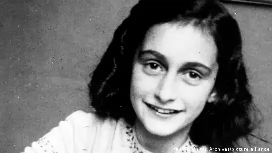
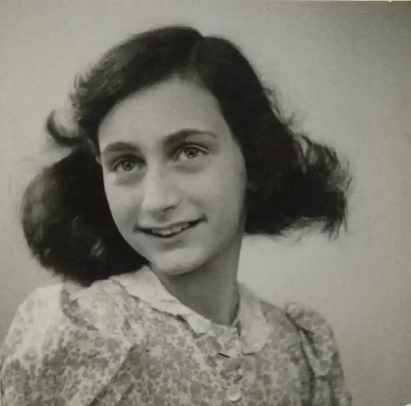

А́нна Франк — єврейська дівчинка-підліток, що народилася у Веймарській республіці. Від нацистського режиму в 1933 році її родина втекла до Амстердама. Проте там їх застала німецька окупація, дівчинка протягом 25 місяців разом із сім'єю переховувалася в столиці окупованих Нідерландів. З часом притулок викрили, Анну та її рідних відправили до концтабору Аушвіц, а пізніше до Берген-Бельзена. Упродовж всього часу перебування у сховищі Анна вела щоденник, який став згодом всесвітньо відомим.
Анна Франк народилася 12 червня 1929 року у Франкфурті-на-Майні, в асимільованій єврейській родині. Батько Анни, Отто Франк, був офіцером у відставці, мати, Едіт Холлендер Франк, — домогосподаркою. Старша сестра Анни, Марго Франк, народилася 16 лютого 1926 року. Франки належали до євреїв-лібералів і не дотримувалися традицій та звичаїв юдаїзму. Вони жили в асимільованій громаді єврейських і неєврейських громадян, де їхні діти росли разом з католиками, протестантами.
В 1933 році Отто Франк емігрував до Амстердама, де став директором акціонерного товариства "Opekta". У вересні того ж року в Амстердам переїхала мати Анни. У грудні до них приєдналася Марго, а в лютому 1934 року — і сама Анна. До шести років Анна Франк ходила до дитячого садка при школі Монтессорі, потім пішла у перший клас цієї школи. Там вона провчилася до шостого класу, після чого перейшла до Єврейського ліцею. У травні 1940 року Німеччина окупувала Нідерланди, і окупаційний уряд почав переслідувати євреїв. У липні 1942 року Франкам прийшла повістка до гестапо на ім'я Марго. 6 липня сім'я Анни Франк переселилися в сховище, влаштоване співробітниками фірми "Opekta", що виробляла джемові добавки, в якій працював Отто Франк, за адресою Принсенграхт 263. Оскільки квартиру Франки залишали в поспіху, то Отто Франк залишив записку, в якій написав, що вся сім'я поїхала до Швейцарії. Ранок 6 липня був дуже дощовим, що Франкам було на руку, тому що вони розраховували, що при такій погоді на вулиці буде мало гестапівців. Оскільки амстердамським євреям на той час вже заборонялося користуватися громадським транспортом, то Анна з батьками (Марго перебралася в сховище раніше) йшли кілька кілометрів під дощем. Щоб створити ілюзію, що вони без багажу, на всіх трьох було по кілька комплектів одягу. Як й інші будівлі Амстердама, що стоять уздовж каналів, будинок номер 263 на набережній Принсенграхт складається з парадної і задньої частин. Офіс і приміщення сховища займають передню частину будови. Задня частина будинку — нерідко пусте приміщення. Саме його за допомогою своїх колег Віктора Кюглера, Йоханнеса Клеймана, Міп Гіз і Елізабет Фоскейл і пристосував Отто Франк під майбутнє сховище. Вхід був замаскований під шафу з документами. 13 липня до них приєдналася сім'я Ван Пельс з Оснабрюка у складі Германа ван Пельса, його дружини Августи і сина Петера. Незадовго до цього Менеєр ван Пельс, який був у курсі, що Франки пішли в сховище, розпустив серед усіх знайомих слух, що вони виїхали до Швейцарії. 16 листопада 1942 року в сховище прийняли восьмого мешканця, дантиста Фріца Пфеффера. У сховищі Анна вела щоденник у листах нідерландською мовою (першою її мовою була німецька, але і нідерландську вона почала вивчати з раннього дитинства). Ці листи вона писала вигаданій подрузі Кітті. У них вона розповідала Кітті все, що відбувалося з нею і з іншими мешканцями притулку кожен день. Свій щоденник Анна назвала Het Achterhuis (укр. У задньому будинку). Перший запис у щоденнику Анна зробила в день свого народження, 12 червня 1942 року, коли їй виповнилося 13 років. Останню — 1 серпня 1944 року. Спочатку Анна вела щоденник лише для себе. Навесні 1944 року вона почула по нідерландському радіо Орані (редакція цього радіо евакуювалася до Великої Британії, звідки віщала аж до кінця війни) виступ міністра освіти Нідерландів Херріта Болкештейна. У своїй промові він закликав громадян зберігати будь-які документи, які стануть доказом страждань народу в роки німецької окупації. Одним з важливих документів були названі щоденники. Під враженням від виступу Анна вирішила на основі щоденника написати роман. Вона одразу почала переписувати і редагувати свій щоденник, паралельно продовжуючи поповнювати перший щоденник новими записами. Мешканцям сховища Анна, включаючи себе, дала псевдоніми. Себе вона хотіла спочатку назвати Анною Ауліс, потім Анною Робін. Сімейство Ван Пельс Анна назвала Петронеллі, Гансом і Альфредом Ван Даан (у деяких виданнях — Петронеллі, Герман і Петер Ван Даан). Фріц Пфеффер став Альбертом Дюселлем. У 1944 році влада отримала скаргу на групу євреїв, які переховувалися, і 4 серпня будинок, де ховалася сім'я Франк, обшукала голландська поліція і гестапівці. За книжковою шафою вони знайшли двері, де 25 місяців ховалися нелегали. Усіх вісьмох людей чотири дні утримували у в'язниці на вулиці Ветерінгсханс, а потім помістили в транзитний концентраційний табір Вестерборк. Там їх як людей, що ухилилися від повісток, помістили в "штрафне відділення" і спрямували на найважчі роботи. 3 вересня їх депортовано звідти до Освенцима. Цей 93-й склад, в якому було 1019 людей, став останнім ешелоном, що вивозив голландських євреїв до табору смерті, — після нього депортація євреїв із Вестерборка в Освенцим припинилася. До того ж мешканці притулку мали нещастя потрапити в Аушвіц у другій половині 1944 року, коли знищення євреїв у німецьких концтаборах досягло максимуму. Після прибуття Анну разом з матір'ю і сестрою насильно відділили від батька, як і Августу ван Пельс відділили від чоловіка і сина. Всі були відправлені на відбір до лікаря Йозефа Менгеле, який вирішував, хто буде допущений до табору. З 1019 людей 549, зокрема всіх дітей, молодших 15-ти років, відправили в газові камери. Анна, якій виповнилося 15 кілька місяців тому, виявилася наймолодшою ув'язненою, яка не підпала під цей відбір через свій вік. Едіт, Марго і Анну направили до бараку 29, де вони три тижні провели на карантині. 7 жовтня в блоці, де містилися Франки, пройшов відбір жінок для роботи на збройовій фабриці. У числі відібраних були Едіт і Марго, однак у Анни до того моменту почалася короста, через що її мати і сестра відмовилися від цієї пропозиції, тому що не хотіли кидати Анну. 30 жовтня, коли радянські війська були приблизно за 100 кілометрів від табору, в жіночому відділенні Аушвіца-Біркенау була оголошена селекція. Все відділення пройшло огляд у Йозефа Менгеле, який відбирав ще здорових ув'язнених для відправлення в інший табір. Анна та Марго в складі 634 жінок були перевезені до Берген-Бельзена. У листопаді до них приєдналася пані ван Пельс. Там Анна на якийсь час зустріла двох своїх друзів — Ханну Гослар і Наннетт Блітц (обидві згадуються на початку щоденника Анни). Оскільки обидві містилися в іншій секції табору, то Анна спілкувалася з ними через паркан. Пізніше Блітц описала Анну, як облисілу, виснажену і тремтячу, а Гослар згадувала, що їхні зустрічі припадали або на кінець січня, або на початок лютого 1945. Марго вони жодного разу не бачили, тому що та була дуже хвора і не могла злізти з нар. Пані ван Пельс Ханна бачила лише один раз, тому що весь інший час та дбала про Марго. Анна сказала своїм друзям, що вважає, що її батьки мертві, і тому вона не відчуває в собі бажання жити. Пізніше Ханна Гослар прийшла до висновку, що якби Анна знала про те, що Отто живий, вона б зуміла протриматися до звільнення. Сестри Янні та Лін Бріллеслейпер, які подружилися з сестрами Франк, згадували, що в останні дні життя Марго впала з нар на цементну підлогу і лежала там у забутті, проте ні у кого не було сил її підняти. У Анни ж була висока температура і вона часто посміхалася в маренні. У обох були явні ознаки епідемічного висипного тифу. На початку березня 1945 року померла Марго, після чого у Анни остаточно зникло бажання чинити опір, і через кілька днів Лін та Янні виявили, що місце Анни на нарах пустує. Саму Анну вони знайшли зовні й насилу відтягли до братської могили, куди раніше віднесли Марго. Точні дати їх смерті невідомі. 15 квітня 1945 року британці звільнили Берген-Бельзен. Єдиним членом сім'ї, хто вижив у нацистських таборах, був батько Анни Отто Франк. Після війни він повернувся до Амстердама, а в 1953 році переїхав до Базеля (Швейцарія). Помер 1980 року.